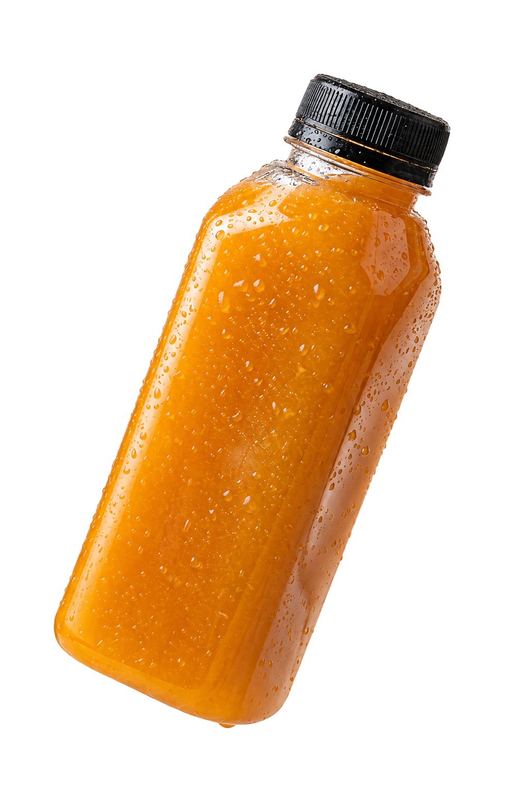

FITFLYS · 350 ML

01 / TURUNCU KARIŞIM
Gün Işığı
ÖNE ÇIKAN MALZEMELER
- Havuç
- Zencefil
- Portakal
- Yeşil elma
- Limon
- Nane
LEZZET PROFİLİ
Narenciye · kök sebze · aromatik bitiş
350 ml ŞİŞE HACMİSoğuk sıkım ÜRETİM YÖNTEMİ
SONRAKİ İÇECEK02 — Kızıl Nar↘